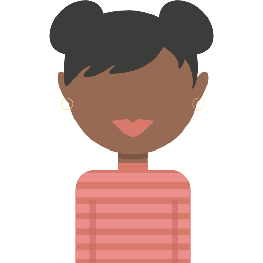
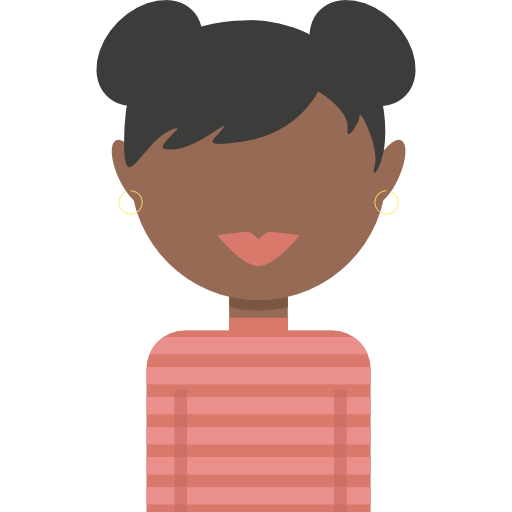

I'm Jordyn.
A noRmal person in a world.


As a person who isn't big on social media, I can neglect to check in and give important updates. Lately -- thanks to social distancing -- I've been able to focus on a skill I've wanted to learn for a long time now -- website/app development and design. So here we are. My own website: here to help me develop my skills while also providing people that love me with updates on my where-abouts and what I've been up to. I hope you like it.

I was offered a fully-funded position as a PhD candidate at Washington University in St. Louis. I will begin studies in Fall 2020 working towards a PhD in public health sciences. My research interests include: 1) community health and engagement and health priorities and 2) communitcation in black populations.

Nori (my cat) and I will be relocating back to St. Louis, MO in July, 2020.
I can be a bit busy at times -- ya know, between researching, spoken word, playing in my basketball league, and babysitting -- but I'd be nothing with out my family. Text me or call me anytime -- if I don't get to you right away, I'll make sure to get back to you soon.
CONTACT ME